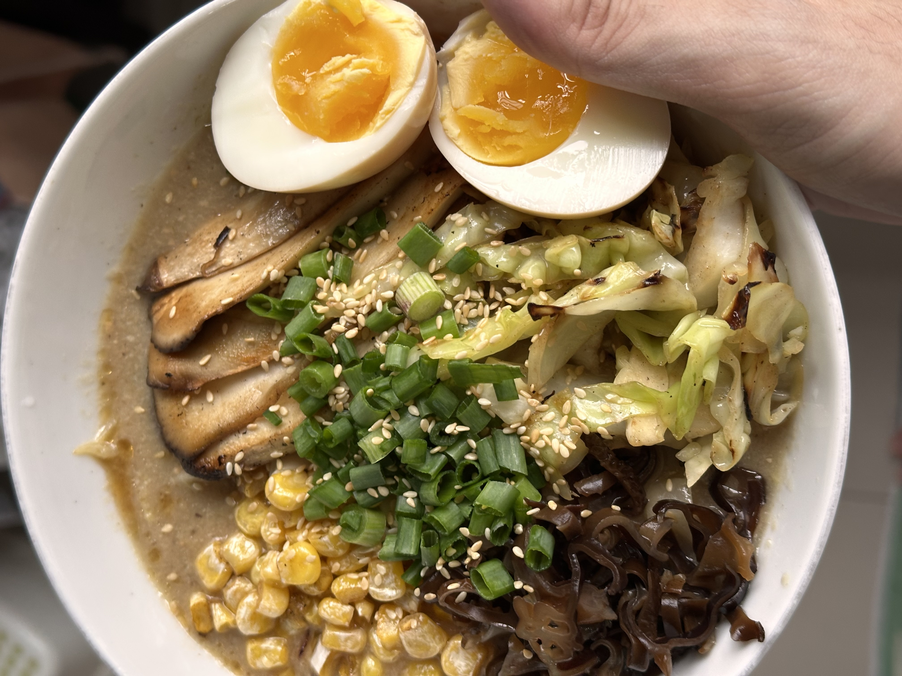

Back to home
Vegan Ramen Recipe

Description
Craving for ramen one day, I decided to find a recipe that was vegan to test out if it was possible to create a broth of deliciousness without meat. Here's my in-progress recipe:
- 2 tbsp finely chopped king oyster mushrooms
- 2 tbsp chopped green onion
- 1/2 diced onion
- 1 tsp minced garlic
- 1 tsp chili bean sauce
- 2 tbsp miso
- 1 tbsp soy sauce
- 1 tsp sugar
- 400ml vegetable stock
- 1 tbsp sesame paste
- pinch of white pepper
- 1 tsp ground sesame seeds
- 1 tsp sesame oil
- 50g sliced cabbage
- optional soya milk
Toppings
- grilled king oyster mushrooms
- sprouts
- green onion
- black fungus
- menma
- nori
- ajitama
Steps
- Fry aromatics: garlic, onion.
- Deglaze with stock.